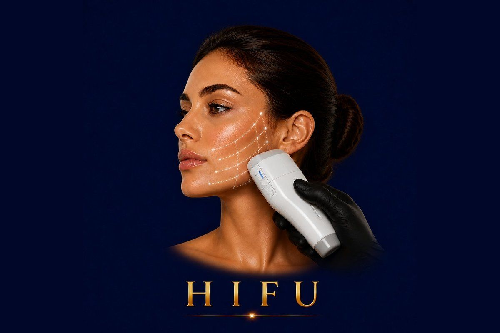

Skin Rejuvenation
High-Intensity Focused Ultrasound — the closest non-surgical alternative to a face lift. Lifts the deep SMAS layer without surgery, needles, or downtime.
✓ Full medical content — verified for SEO and patient information.

About
HIFU (High-Intensity Focused Ultrasound) is a non-surgical face and neck lifting treatment that uses focused ultrasound energy to reach deeper layers of the skin than any other non-invasive technology can — specifically, the SMAS layer (Superficial Musculoaponeurotic System). This is the exact same layer that plastic surgeons tighten and reposition during a surgical face lift. HIFU delivers ultrasound energy in tiny, precise focal points beneath the skin's surface, heating the targeted tissue to a temperature that triggers contraction of existing collagen and stimulates the production of new collagen and elastin. Because the energy bypasses the surface of the skin entirely, there's no damage to the outer layer — no peeling, no marks, no recovery. The result is a gradual, natural-looking lift and tightening effect that develops over 2–3 months and continues to improve as new collagen forms. HIFU is FDA-approved and considered one of the most effective non-surgical lifting technologies available in the world today.
Why It Works
The Process
90 minutes depending on the area treated: 1
Consultation & assessment Your doctor evaluates the laxity of your skin, identifies target areas, and customizes the treatment depth and intensity. 2
Cleansing & preparation The skin is thoroughly cleansed and an ultrasound gel is applied to allow smooth contact and accurate energy transmission. 3
HIFU application The HIFU handpiece is gently moved across the treatment area
The device delivers focused ultrasound energy to one of three depths — 1.5mm (skin), 3.0mm (deeper dermis), and 4.5mm (SMAS layer) — depending on the desired effect
You may feel brief, sharp warm pulses during energy delivery; mild discomfort is normal and well-tolerated. 4
Cooling & finishing The gel is removed and a soothing serum is applied
You can immediately return to your normal activities
3 months as new collagen forms
Some patients benefit from a single session annually; others combine HIFU with smaller maintenance treatments
Who It's For
Safety First
Quality You Can Trust
Treatment Comparisons
A surgical face lift remains the gold standard for dramatic, long-lasting lifting (10+ years) — but with general anesthesia, scars, recovery, and significant cost. HIFU delivers a meaningful percentage of that lifting effect without any of the surgical risks, ideal for patients who aren't ready for surgery or want to delay it.
Thread lifts physically lift sagging tissue using dissolvable threads inserted under the skin — strong immediate lift, but the threads dissolve in 12–18 months. HIFU also lasts 12–18 months but stimulates the body's own collagen without inserting any foreign material. Many patients combine the two: threads for immediate lift, HIFU for collagen support.
Forma is more comfortable, more gradual, and works on skin tightening without the deeper SMAS lift. HIFU is stronger, deeper, and more lifting-focused — but can feel slightly uncomfortable during the session. They're often used in combination: Forma for ongoing maintenance and surface refinement, HIFU once a year for the deep lift.
Morpheus8 uses RF microneedling for collagen remodeling and addresses acne scars exceptionally well, with mild downtime. HIFU is non-invasive with zero downtime and focuses on lifting rather than scar treatment. Many comprehensive plans use both — Morpheus8 for texture and scars, HIFU for lifting.
Biostimulators are injected and stimulate collagen from inside the tissue — strong, long-lasting volumization and firmness. HIFU is external and produces lifting through ultrasound. The two approaches complement each other: biostimulators restore volume and structure, HIFU lifts the supporting layer.
Investment
HIFU – Non-Surgical Face Lift
The price of a HIFU session at Hollywood Clinic is set after a free consultation and depends on: Treatment area — full face, full face + neck, neck alone, jawline only, or upper face/brow.
Final pricing is determined after a free consultation, because every case is different.
Book Free ConsultationWhy Hollywood Clinic
Dr. Marwa Magdy — Aesthetic Dermatologist & Advanced Injector, advanced HIFU experience for non-surgical face and neck lifting, and an expert in combination protocols (HIFU + injectables, HIFU + Morpheus8, HIFU + biostimulators)
Dr. Rana Safwat — Dermatology, Laser & Non-Surgical Aesthetics Consultant, 12+ years of experience. Ideal for patients who want HIFU as part of a long-term anti-aging plan with structured maintenance
FAQ